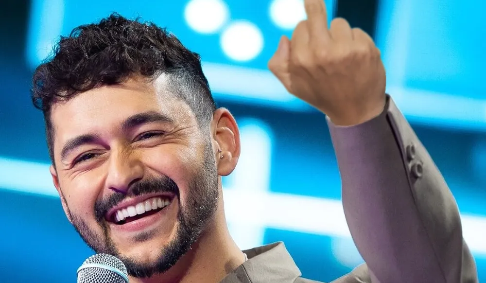

Utrikes

Israel rasande efter ESC-resultatet: "lovades oss för 3000 år sedan"
I lördags hölls Eurovision Song Contest 2026 i Wien, Österrike. I den spända poängräkningens sista ögonblick avgjordes det: Bulgarien vinner, följt av Israel på andraplats och Rumänien på tredje. Israels reaktion på plats var minst sagt dagisartad. Bland annat såg flera källor till Löken hur den israeliska delegationen, med artisten Noam Bettan i täten, hastigt gick iväg från greenroom med långfingrarna höjda mot publiken strax efter att programmet avslutades.
Israel har under resten av helgen lagt ut ett flertal videor på Twitter, numera X, där premiärminister Benjamin Netanyahu praktiskt taget skäller ut EBU (organisationen som håller i ESC) och Bulgarien. Han påstår bland annat att "vinsten lovades till oss för 3000 år sedan" och att Bulgarien "utvecklar massförstörelsevapen". Han fortsatte med att hota med en invasion av landet eftersom "Donald skulle göra allt för mig". USA:s president Donald Trump kommenterade inlägget, där han sa att han ska skicka 50 miljarder dollar i "barnbidrag" som plåster på såren och att "bangalanga is the worst song".
Reaktionen är inte oväntad då Israel misstänks ha fuskat i omröstningen. Bland annat har de lagt ner mycket pengar på reklam där man uppmanas rösta på Israel, även om man inte tänker se programmet. Att Israel rakt av betalat Israel-röstare är inte heller uteslutet, men det är inget som Löken kan bevisa.